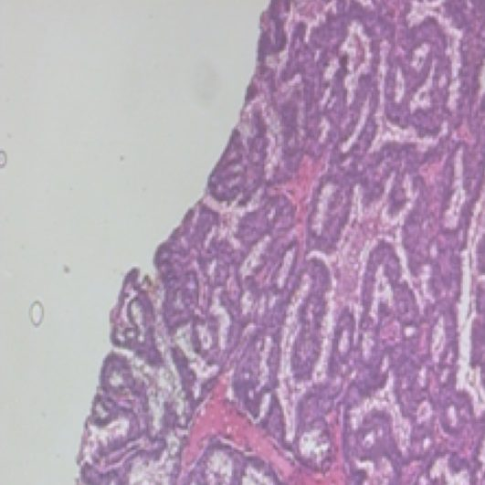
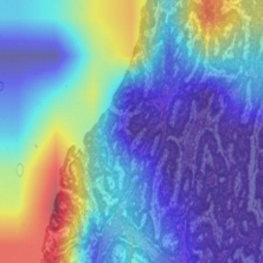

Breast Cancer Histopathology Classification
Tissue images are classified as benign or malignant by a model that fuses two magnifications. Drag across the slide: at 40X the single-scale model got this malignant sample wrong. At 200X it got it right, which is exactly why the final model uses both.
98.94%malignant recall
96.38%accuracy
9,109images
Drag to compare the slide with the model's attention


SlideGrad-CAMActual: MalignantPredicted: Benign (51.9%)